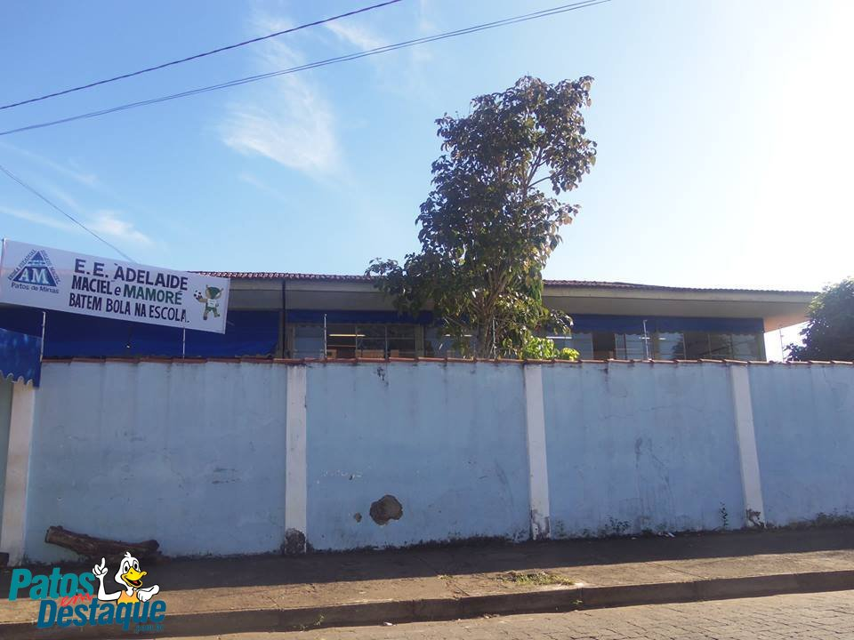

início
história
Eventos
Pontos Turisticos
Manifestações
Início
História
Eventos
Pontos Turísticos
Manifestações
Festival de Teatro e Dança acontece neste final de semana no Mocambo; veja a programação
Panamenhos mostram adaptação e felicidade por estudarem no UNIPAM, em Patos de Minas

Maior investimento em saúde e educação da história? Falcão apresenta balanço dos 1000 dias de governo
Anterior
Próximo
Sec. Mun. De Administração
Sec. Mun. De Agricultura
Controladoria-Geral
Sec. Mun. De Administração
Sec. Mun. De Cultura
Sec. Mun. De Desenvolvimento Social
Sec. Mun. De Educação
Sec. Mun. De Finanças
Inst. De Prev. Municipal De P. De Minas (IPREM)
Secretaria Municipal De Governo